Skiing has been a lifetime passion for me. I love exploring, I love traveling, and I love challenging myself. Best done with friends and family.
My favorite mountain is Alta. Jackson Hole is second place and Brighton third.
 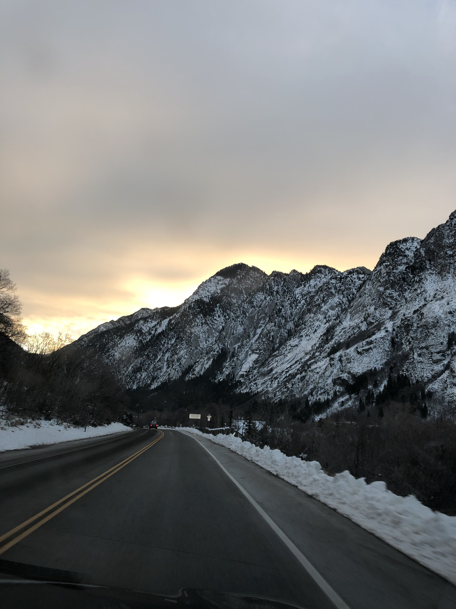
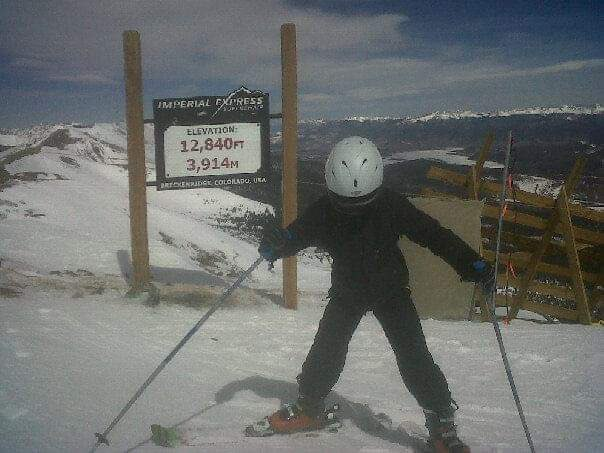
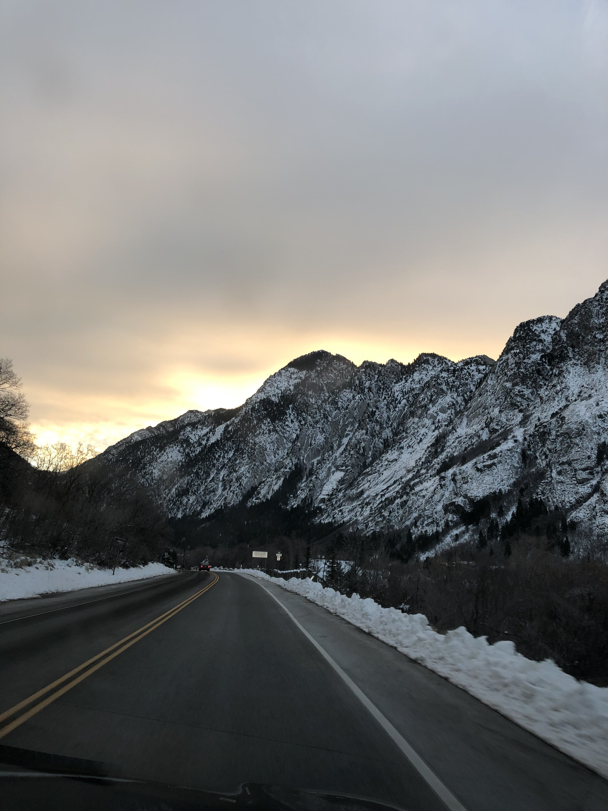
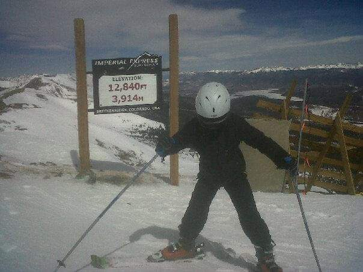
I love skiing a lot. Unfortunately, it's only practical during the winter months. In the summer and fall I still enjoy exploring the great outdoors. Best done with a tent or hammock, though optional.
I enjoy exploring the White Mountains in New Hampshire, mainly on or around the Appalachian trail. Appalachian, not Appalachian.
Best explored alone.
 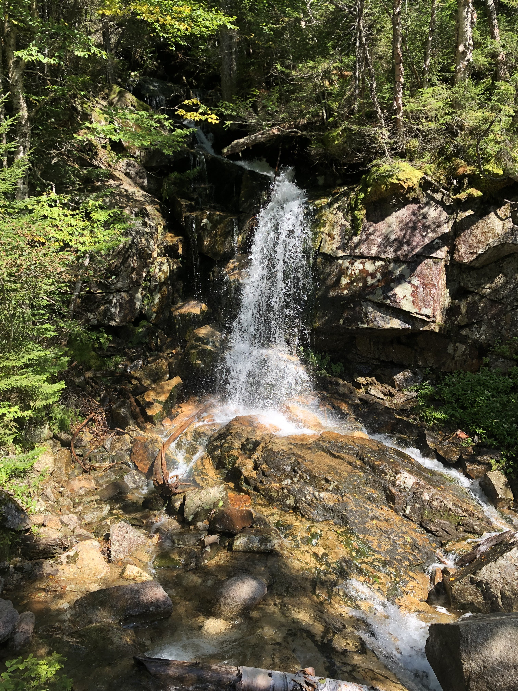
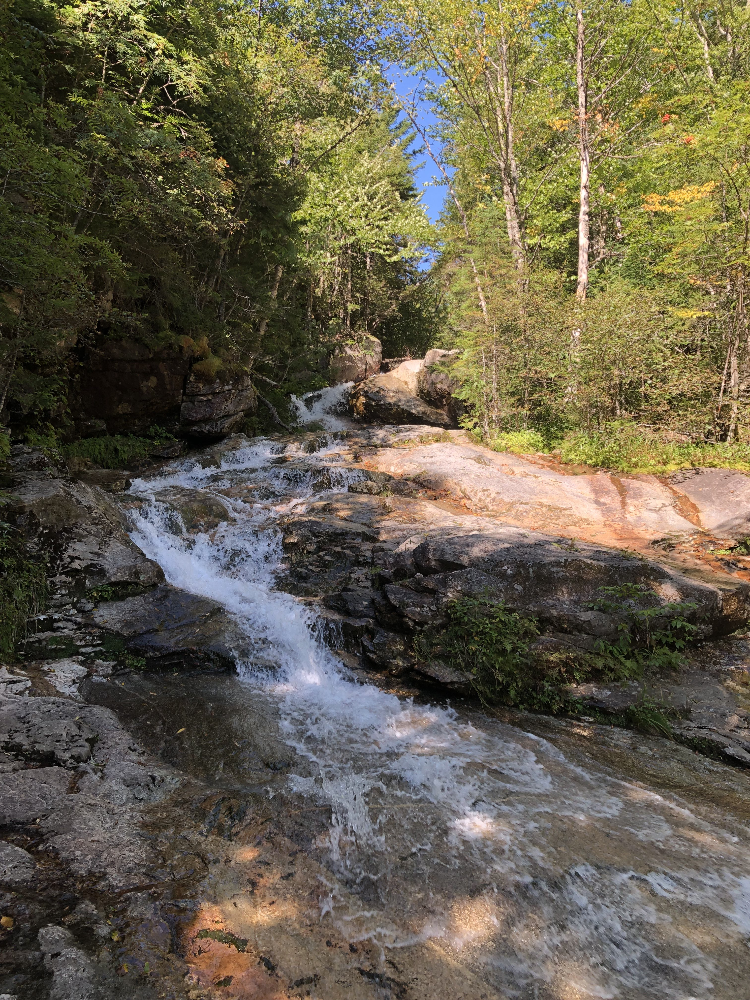
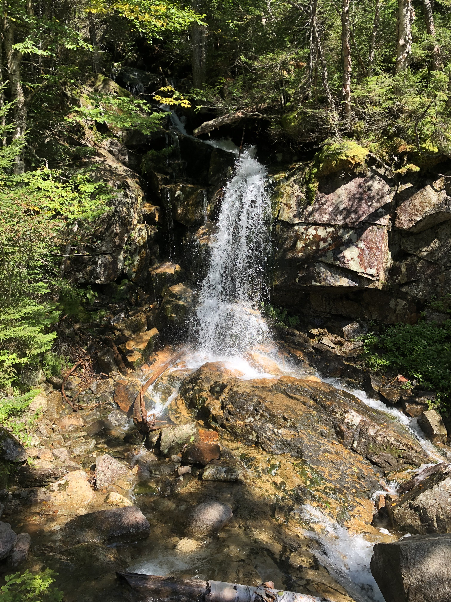
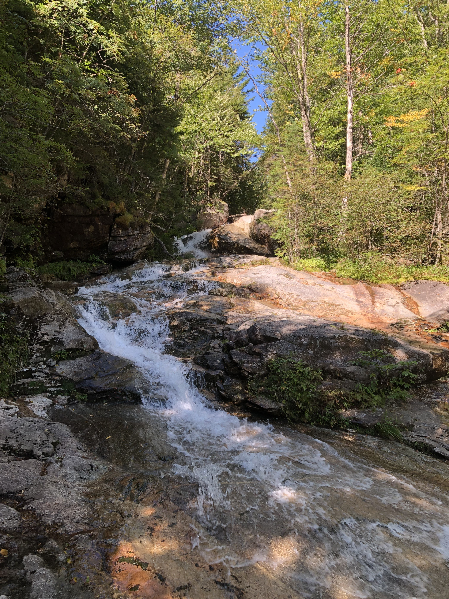

 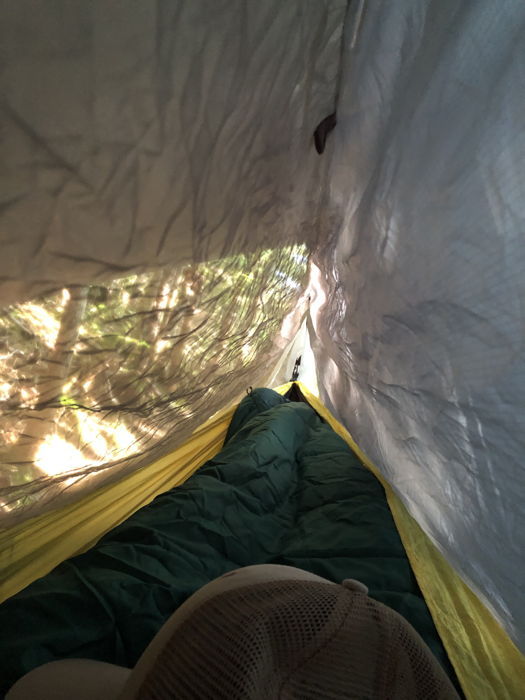
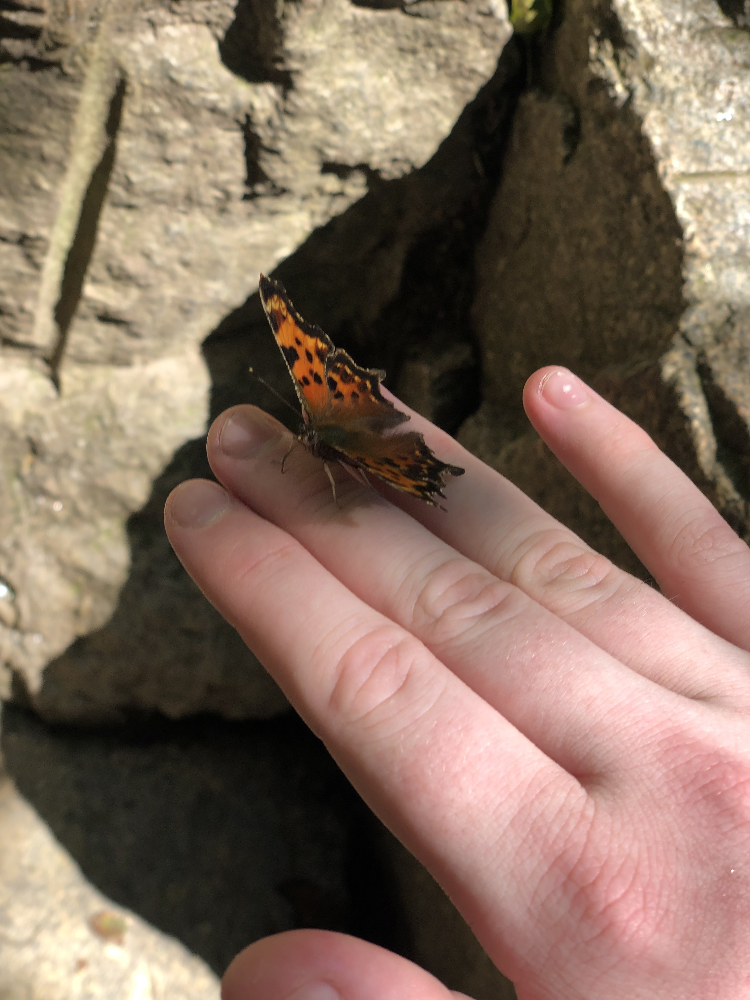
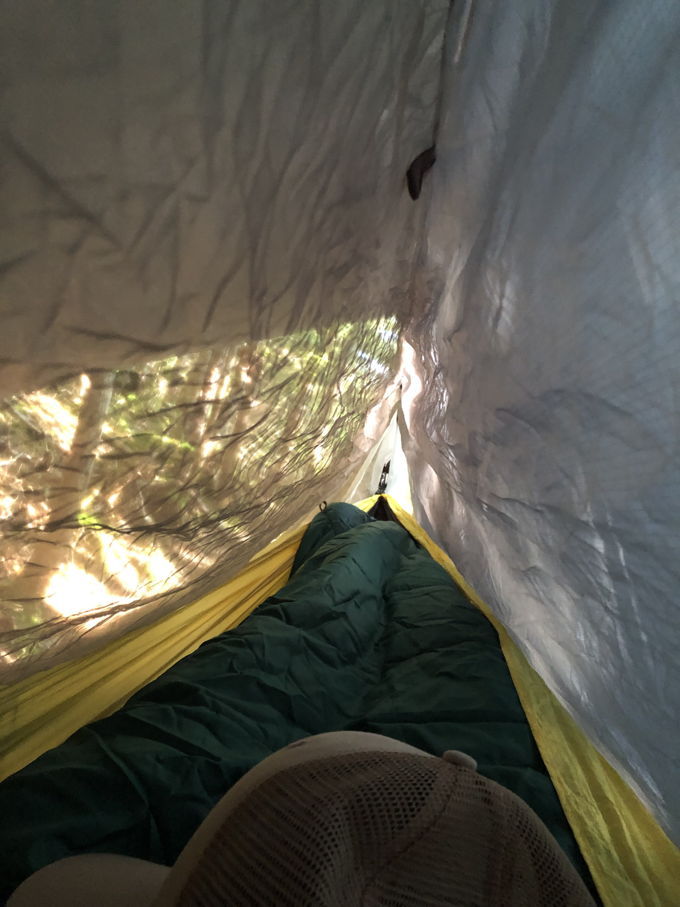
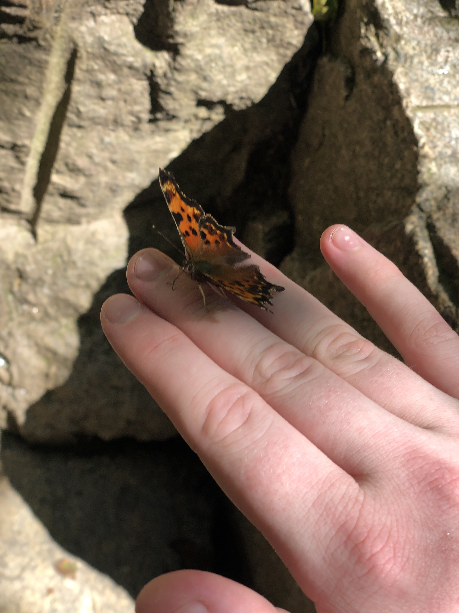